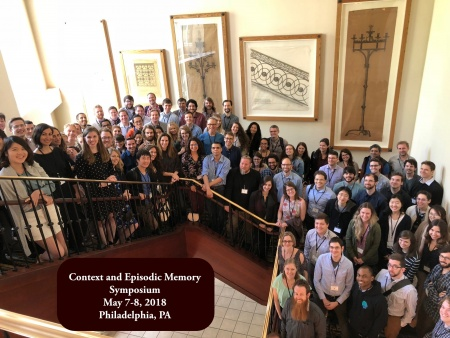

CEMS 2018

The 2018 Context and Episodic Memory Symposium (CEMS) was held on May 7th and 8th, 2018.
The symposium is designed to be a forum for the exchange of ideas among colleagues working on theoretical and empirical approaches to the study of context and episodic memory, broadly construed.
Location & Hotel
The venue for CEMS 2018 was the Inn at Penn, located on the campus of the University of Pennsylvania.
The Inn at Penn is a Four Diamond Hilton hotel, located at 3600 Sansom Street in historic Philadelphia, PA.
More information on the Inn at Penn can be found on their website.
Hotel
In addition to its role as the venue for CEMS 2018, the Inn at Penn served as the preferred hotel for the event.
Abstract Submission
Abstract Submission for CEMS 2018 is now CLOSED. Thank you for your submissions.
The symposium is designed to be a forum for the exchange of ideas among colleagues working on theoretical and empirical approaches to the study of context and episodic memory, broadly construed.
The format of CEMS is to have a relatively small number of spoken presentations each followed by a commentary given by a scientist working on related problems. The program committee aims to identify submissions that highlight major new theoretical and/or empirical advances. Papers not selected for these spoken presentations can be given as poster presentations. In previous years, posters have been a major highlight of the meeting and have been very well attended.
Schedule
If you are presenting and have scheduling conflicts, please let us know as soon as possible by emailing context.symposium@gmail.com
The preliminary program with talk titles and full author lists can be found here.
| Monday | Tuesday | |||
|---|---|---|---|---|
| 8:00 | Registration and Breakfast | 8:00 | Breakfast and Late Registration | |
| 8:30 | Michael Kahana: Welcome and introductory remarks | 8:30 | Neal W. Morton | |
| 8:35 | Lila Davachi | 8:50 | Lynn J. Lohnas | |
| 9:00 | Geoff Ward | 9:10 | Marc N. Coutanche | |
| 9:20 | Gregory E. Cox | 9:30 | Morning Break | |
| 9:40 | Morning Break | 9:50 | Symposium Human ECoG and Single Unit Recordings | |
| 10:00 | Mikhail Katkov | 1. Bradley Lega | ||
| 10:20 | Ansgar Endress | 2. James E. Kragel | ||
| 10:40 | Jeff Starns | 3. Youssef Ezzyat | ||
| 11:00 | Coffee and Snack Break | 4. Andrew Watrous | ||
| 11:20 | Keynote Address: Nora Newcombe | 5. Shachar Maidenbaum | ||
| 12:20 | Group Photo | 10:50 | Coffee and Snack Break | |
| 12:30 | Lunch Break | 11:15 | In Memoriam: Jeff Greenberg | |
| 1:35 | Kevin J. Miller | 12:00 | Lunch Break | |
| 2:00 | Andrew Heathcote | 1:15 | Adam F. Osth | |
| 2:25 | Brandon Turner | 1:35 | Deborah Talmi | |
| 2:50 | Afternoon Snack and Beverage Break | 1:55 | Rivka Cohen | |
| 3:10 | Lili Sahakyan | 2:15 | Afternoon Snack and Beverage Break | |
| 3:30 | Talya Sadeh | 2:35 | Rahul Bhui | |
| 3:50 | Christopher Baldassano | 2:55 | Nicole M. Long | |
| 4:10 | Coffee Break | 3:15 | Zoran Tiganj | |
| 4:30 | Data Blitzes, Session 1 | 3:35 | Jordana S. Wynn | |
| 1. James W. Antony | 3:55 | Coffee Break | ||
| 2. Erin Kendall Braun | 4:15 | Data Blitzes, Session 2 | ||
| 3. Sarah DuBrow | 1. William J. Hopper | |||
| 4. Megan T. deBettencourt | 2. Rebecca A. Cutler | |||
| 5. Jamal Williams | 3. Jack Wilson | |||
| 6. Nicholas Diamond | 4. Ida Momennejad | |||
| 7. Vishnu P. Murty | 5. Patrick Sadil | |||
| 5:35 | Reception and Poster Session | 6. Christopher N. Wahlheim | ||
| 7. Min Kyung Hong | ||||
Past Symposia
For information about past CEMS events, please click here.